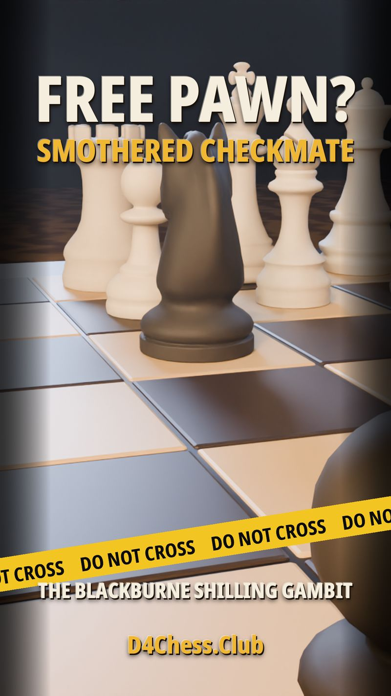
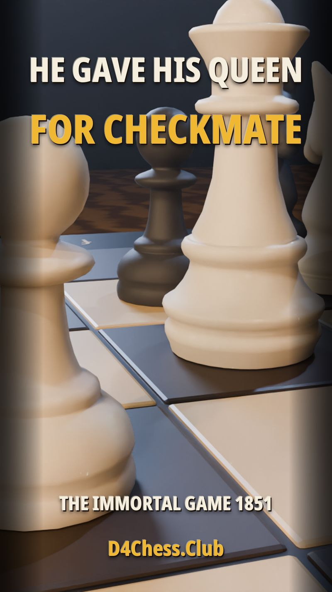

The Blackburne Shilling Gambit
A smothered checkmate in seven moves, from the D4 Chess Club trap series.
Editing
The editing room cuts the studio cartoons and the chess films and social video that go out through D4 Chess Club every week. All of it is edited in DaVinci Resolve.
Episodes are assembled scene by scene. The voices were recorded first, the picture is timed to the sound, and captions are part of the edit from the start, not an afterthought.
Traps, puzzles, and full games. Every position is checked with a chess engine before it is published, every move is shown in full, and no step is ever skipped to save time.
Cut for phones first. The opening seconds carry the picture and the point, never a wall of text, and the first frame of every film is designed to be its thumbnail.
Recent Work
Each of these is the opening frame of a finished film, designed to carry the whole hook on its own.

A smothered checkmate in seven moves, from the D4 Chess Club trap series.

A lesson film about seeing the purpose of a move, built for D4 Chess Club.

Anderssen against Kieseritzky, London 1851, the most famous finish in chess, retold on the studio set.
The Craft Rules
Chess boards inside the edit are built from the true position, move by move, with tools the studio wrote for the job. 3D shots come from our standing Blender set. Narration, when a film has it, is recorded scene by scene and checked against the picture scene by scene, so the words and the board always describe the same thing.
Nothing goes out on a claim we have not checked. That rule costs time, and it is the reason the work can be trusted.